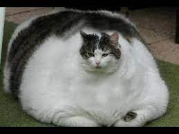

Famoso gato va a prisión por evasión de impuestos
Porfirio "El Mata Viejitas" es un gato el cual ganó su apodo al hacer tropezar a una anciana, robarle todo su dinero y brutalmente acostarse con su inmenso cuerpo sobre su cara sofocándola. Ahora este felino ha sido traido ante las autoridades debido a el delito de evasión de impuestos por más de 10 años, Porfirio será condenado por sus crimenes previos y la evasión de impuestos el día 19/11/2022